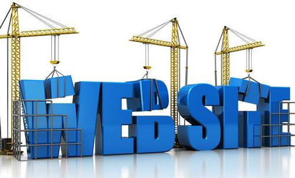

Сайт, или веб-сайт (от англ. website: web — «паутина, сеть» и site — «место», буквально «место, сегмент, часть в сети»), — одна или несколько логически связанных между собой веб-страниц; также место расположения контента сервера. Обычно сайт в Интернете представляет собой массив связанных данных, имеющий уникальный адрес и воспринимаемый пользователями как единое целое. Веб-сайты называются так, потому что доступ к ним происходит по протоколу HTTP[1].
Веб-сайт, как система электронных документов (файлов данных и кода) может принадлежать частному лицу или организации и быть доступным в компьютерной сети под общим доменным именем и IP-адресом или локально на одном компьютере. В статье журнала «Хозяйство и право» также было высказано мнение, что каждый сайт имеет своё название, которое при этом не следует путать с доменным именем[2]. С точки зрения авторского права сайт является составным произведением, соответственно название сайта подлежит охране наряду с названиями всех прочих произведений.
Все сайты в совокупности составляют Всемирную паутину, где коммуникация (паутина) объединяет сегменты информации мирового сообщества в единое целое — базу данных и коммуникации планетарного масштаба. Для прямого доступа клиентов к сайтам на серверах был специально разработан протокол HTTP.
Что такое HTML